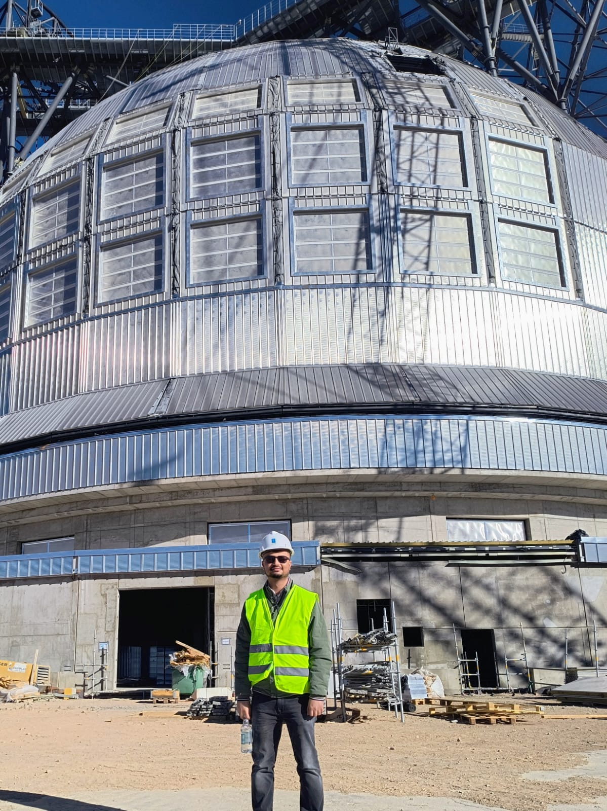
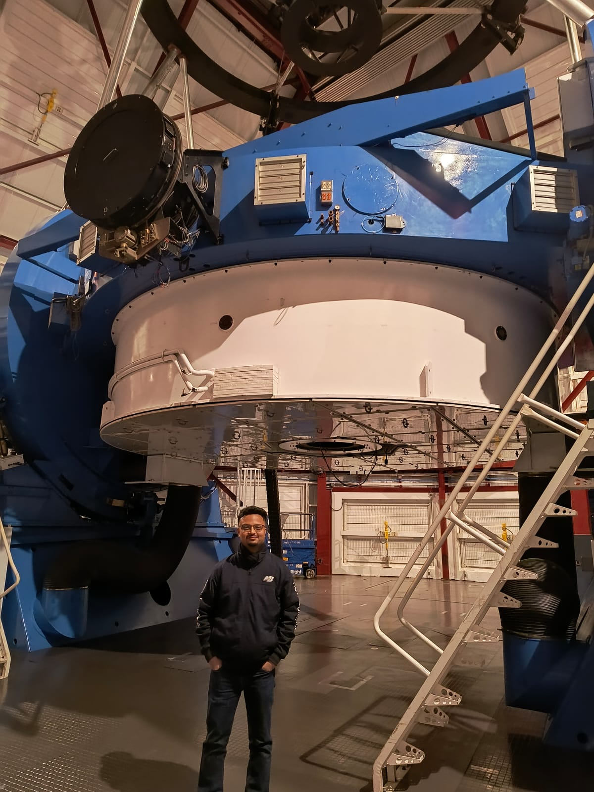
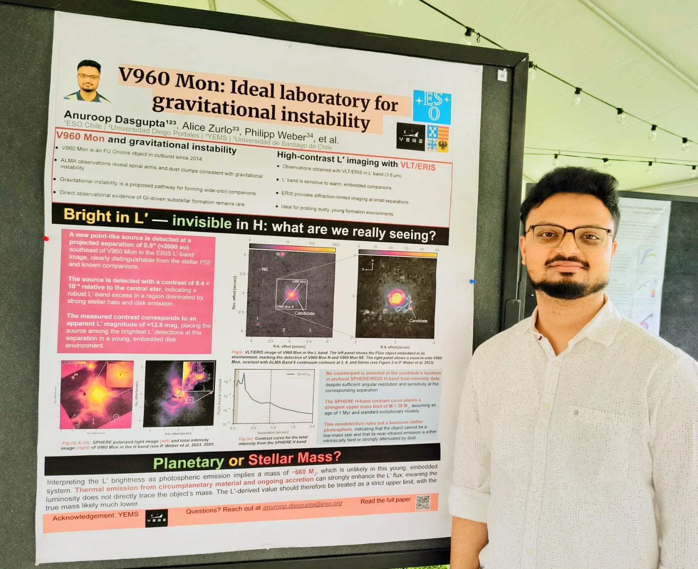
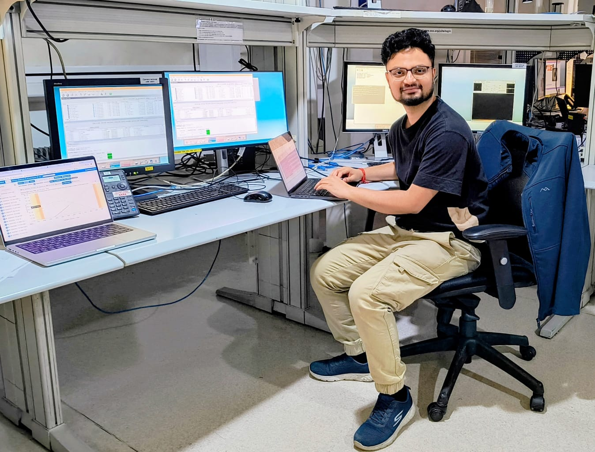
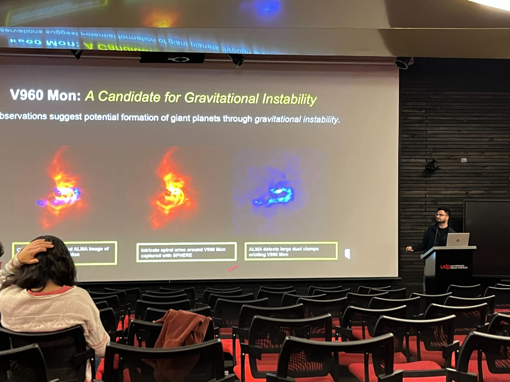
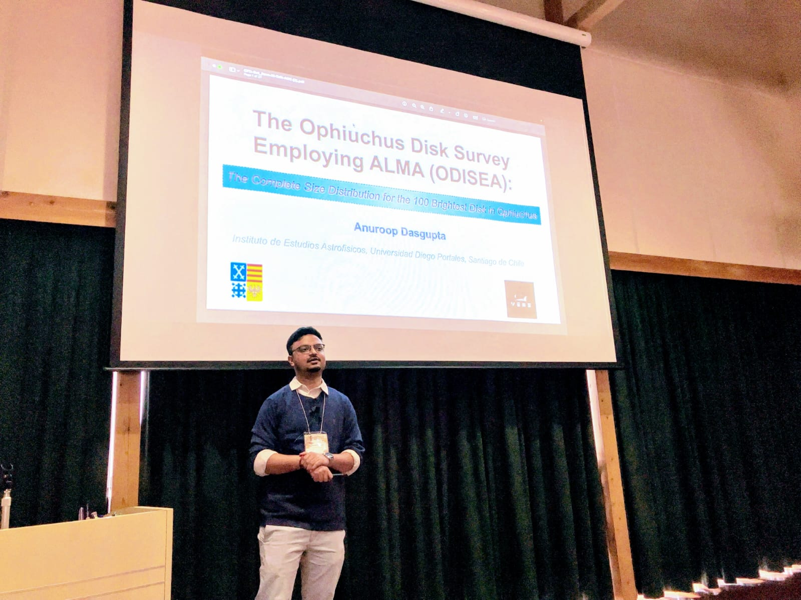
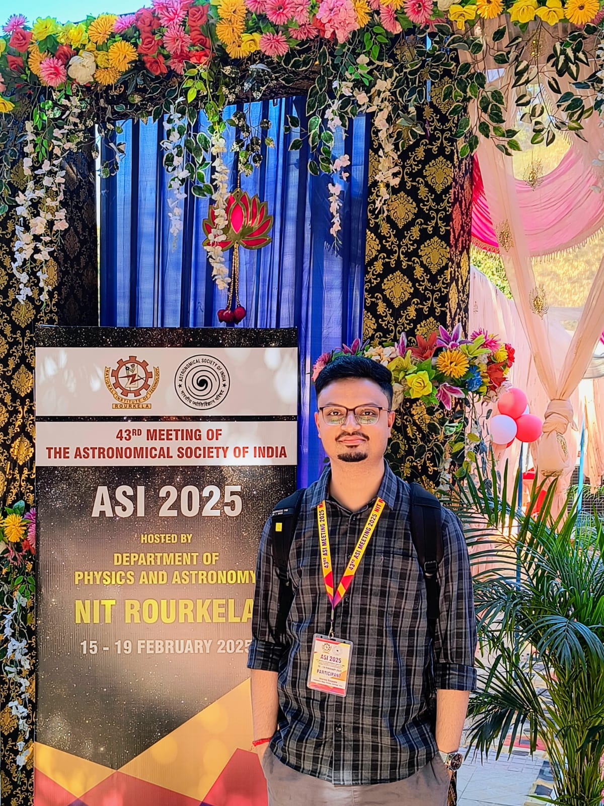
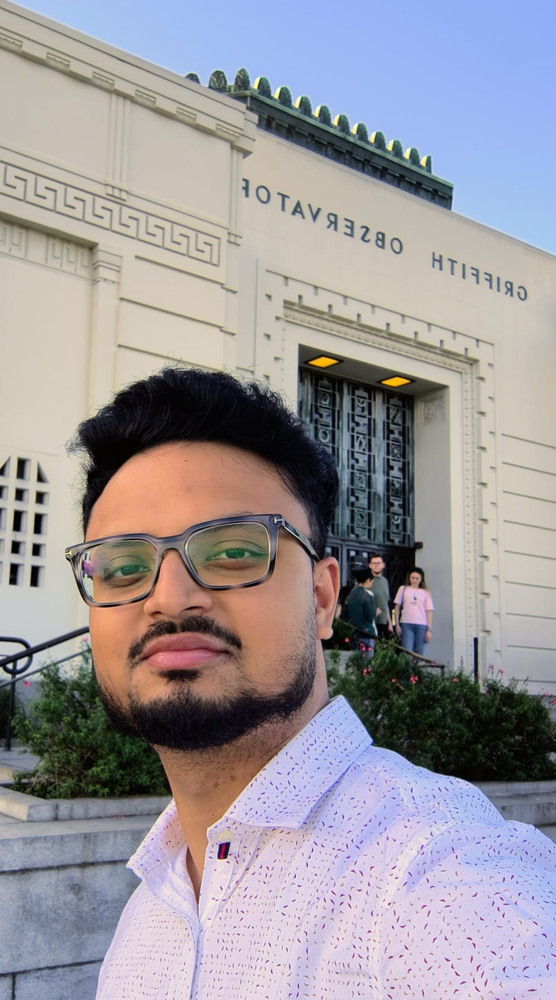

Gallery
Telescopes, observing runs, and conferences
A few moments from the road: nights at the telescope, visits to the observatories that make this work possible, and conferences where I have shared it.

Extremely Large Telescope
At the ELT dome under construction, Cerro Armazones, Chile.

Magellan Telescope
Inside the dome at Las Campanas Observatory, Chile.

Spirit of Lyot 6, Caltech
Presenting the V960 Mon gravitational-instability poster, Pasadena.

Observing run
At the control room during a run at Las Campanas Observatory.

Universidad Diego Portales
Talk on V960 Mon and gravitational instability, Santiago.

Circumplanetary Disks III, Kyoto
Presenting the ODISEA disk-size survey, Japan.

ASI 2025
43rd meeting of the Astronomical Society of India, NIT Rourkela.

Griffith Observatory
A visit to Griffith Observatory, Los Angeles.